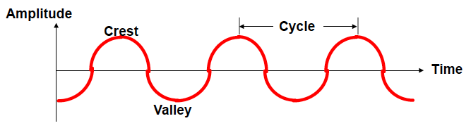
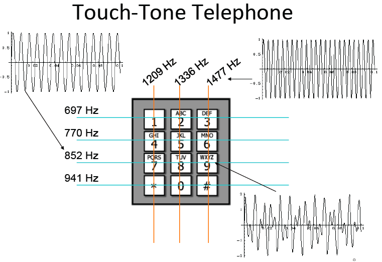

Sound is produced by the vibration of an object in air or liquid
Sound moves very fast through waves of pressure (in air, 340 m/sec = 750 miles/hour)

The sound wave for a pure tone is characterized by its frequency (pitch) and amplitude (loudness)
Frequency is measured in Hz or cycles per second. Humans can hear frequencies between 20 Hz and 20,000 Hz (20 KHz). Amplitude is measured in deciBels.
Sound waves for a short music clip:

In an analog representation of sound, some physical property, such as voltage, varies continuously in frequency and amplitude:
An analog signal can be sampled to create a digital representation of sound:
In a digital representation, the signal is conveyed by a sequence of discrete numbers:
0 5 3 3 -4 -6 -2 2 ...

Two important factors in the sampling process affect sound quality and the file size needed to store audio signals:
The choice of sampling rate and bit-resolution depend in part on the type of audio information being represented:
How frequently should we sample? The Nyquist Sampling Theorem says:
Sample twice as often as the highest frequency you want to capture
When converting from a digital representation back to analog (e.g. listening through a speaker), the quality of the reconstructed signal (dashed curves below) depends on the original sampling rate:
High sampling rate and bit-resolution yield high quality sound, but require large file sizes!
The bit-rate is the number of bits needed to store 1 second of audio:
bit rate (bits per second) = bit-resolution x sampling rate
file size (in bits) = bit rate x recording time
How many bits in 1 second of monophonic CD music?
How many bits in 1 second of stereo CD music?
How many bits in one hour of stereo CD music?
Will we need to have such large file sizes for sound clips on our web pages? No, thanks to audio compression techniques, used in file formats such as Quicktime, AVI, RealAudio and MP3.
Any time signals are transmitted, there will be some degradation of quality:
When we continue to transmit and transform signals, the effect is compounded.
However, digital transmission and storage of information allows the possibility for creating perfect (undegraded) copies of the information, because we only need to distinguish 1's from 0's, and because errors in transmission can be detected and corrected.